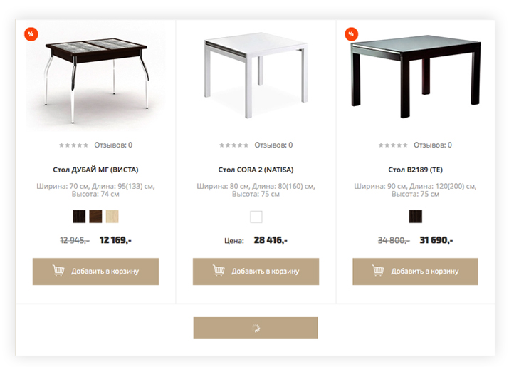
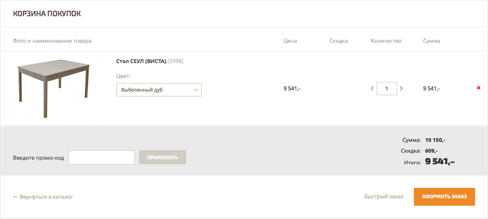

Но уже через несколько лет благополучной работы, развития и кропотливого формирования клиентской базы компания столкнулась с непреодолимыми сложностями. Причиной тому стала безнадёжно устаревшая техническая платформа, ограничивавшая перспективный интернет-магазин и отталкивавшая его покупателей.
В какой-то момент руководству компании стало ясно – больше так продолжаться не может. И после успешной разработки новых дизайн-макетов, компания обратилась в Art-Fresh за разработкой технической части и функционала интернет-магазина.
Одной из основных проблем интернет-магазина Надиване.рф была низкая производительность сайта. При постоянно растущем потоке в более чем 10 000 посетителей ежедневно, прежняя версия сайта попросту не справлялась с такими нагрузками.
Для решения этой проблемы нашей компанией была применена технология «Композитный сайт» на платформе «1С-Битрикс: Управление сайтом», предлагающая совершенно новый цикл загрузки страниц.
Теперь сайт «летает» при любом количестве посещений. А пользователь избавлен от ожидания и раздражения, которые могли бы помешать ему совершить покупку.
Так как интернет-магазин располагает большим количеством товарных групп и широким выбором продукции, нашей команде пришлось хорошенько потрудиться над разработкой наиболее эргономичных способов навигации по каталогу.
1 2 
Самое время отдать дань нашему клиенту – он проявлял живой интерес и принимал деятельное участие на всех этапах разработки интернет-магазина. Именно он обратил внимание разработчиков на необходимость создания особенно гибкой и удобной в использовании системы навигации по объёмному товарному каталогу.
Основательно потрудившись над этой задачей, команда разработала универсальную систему навигации, при помощи которой любой пользователь найдет интересующий его товар максимально удобным ему способом.
Предоставляет быстрый доступ к основным товарным группам. Меню всегда доступно через закреплённую «шапку» сайта, благодаря чему пользователь может в любой момент перейти в интересующий его раздел каталога.
Система параметрических фильтровПредоставляет быстрый доступ к основным товарным группам. Меню всегда доступно через закреплённую «шапку» сайта, благодаря чему пользователь может в любой момент перейти в интересующий его раздел каталога.
«Хлебные крошки»Предоставляет быстрый доступ к основным товарным группам. Меню всегда доступно через закреплённую «шапку» сайта, благодаря чему пользователь может в любой момент перейти в интересующий его раздел каталога.
Полнотекстовый поискПредоставляет быстрый доступ к основным товарным группам. Меню всегда доступно через закреплённую «шапку» сайта, благодаря чему пользователь может в любой момент перейти в интересующий его раздел каталога.
Поиск по брендамПредоставляет быстрый доступ к основным товарным группам. Меню всегда доступно через закреплённую «шапку» сайта, благодаря чему пользователь может в любой момент перейти в интересующий его раздел каталога.
Всё для наглядной демонстрации товара и абсолютного удобства покупателя.
Основной раздел карточки содержит динамическую фотогалерею с автоматической системой масштабирования и краткое описание основных характеристик товара. Тут же можно добавить товар в «Корзину», перейти к заполнению заявки на кредит, узнать об условиях доставки и оплаты, задать вопрос менеджеру, а также отложить товар, добавить его в список сравнения или отправить информацию о нём на электронную почту.
Ниже можно ознакомиться с полным описанием товара, изучить условия оплаты и доставки, прочитать или оставить отзывы о товаре, а также быстро перейти на страницы аналогичной продукции.
В отдельном блоке покупателю предлагаются сопутствующие товары, которые он может в один клик добавить в «Корзину». Наличие этого блока не только значительно сокращает время поиска товаров покупателем, но также способствует существенному увеличению среднего чека интернет-магазина.
В лучших традициях Art-Fresh «Корзина» предоставляет покупателю возможность изменить состав заказа с мгновенным пересчётом общей стоимости покупки без перезагрузки страницы.
Сюда также добавлен блок допродажи (Cross-sell), в котором покупателю предлагаются дополнительные товары, сопряженные с теми, что находятся в его «Корзине». Наша практика показывает, что этот блок является эффективным способом увеличения среднего чека интернет-магазина.
С того момента, как был запущен проект наш клиент отмечает значительный и стабильный рост трафика и увеличение конверсии. А интернет-магазин продолжает «летать» и радовать.
перейти на сайт